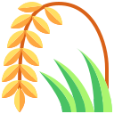
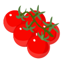
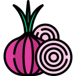
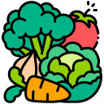
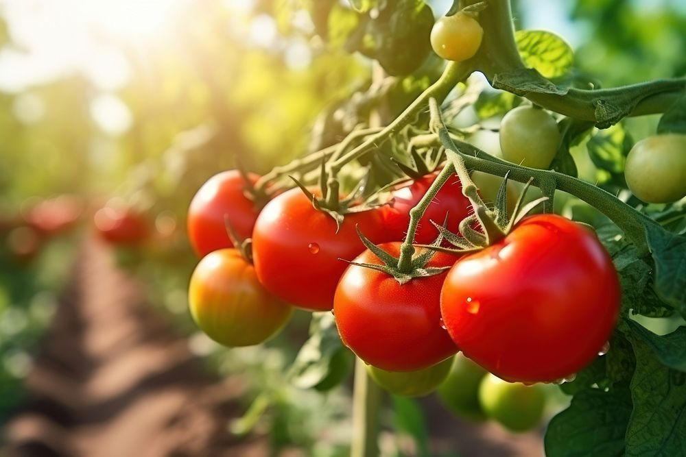
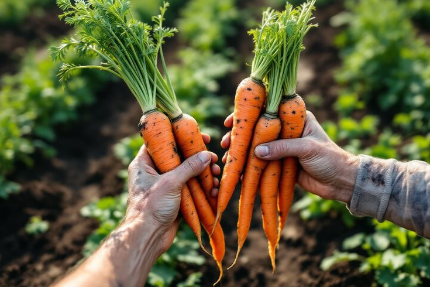

Learn Smart Farming Step by Step
Discover practical farming techniques, crop management, seasonal cultivation methods, and expert agricultural advice designed for both beginners and experienced farmers.
Explore Farming Guides
Choose a crop category and discover complete farming guides, cultivation methods, irrigation techniques, and harvesting tips.

Rice Farming
Complete cultivation guide.
Corn Farming
Modern corn cultivation.

Tomato
High yield tomato farming.

Carrot
Healthy carrot production.
Potato
Potato cultivation tips.

Onion
Onion growing methods.

Vegetables
Seasonal vegetable guides.
View All
Browse every farming guide.
Popular Farming Guides
Explore our most popular farming guides with detailed cultivation methods, expert recommendations, and harvesting techniques.
Rice Cultivation
Complete guide from land preparation to harvesting with expert farming tips.

Tomato Farming
Learn disease management, irrigation, and high-yield tomato production.

Carrot Farming
Learn soil preparation, fertilization, irrigation, and harvesting methods.